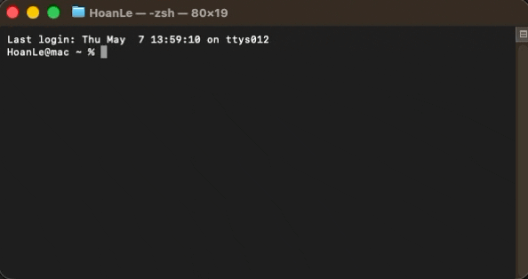

Installation
Installation¶
Choose the Desktop App (recommended — no Python or coding setup required) or install as a Python package (pip).
All installers are published on the official GitHub Releases page. Your preferences, fit models, and templates are stored separately from the application folder, so upgrading keeps all your work safe.
1. Install SPECTROview¶
Select your operating system below:
Go to GitHub Releases, expand Assets on the latest release, and choose one of the two Windows downloads:
Option A — Standard Installer (...Windows_x64_Setup.exe) (Recommended)
- Double-click the downloaded
.exefile to install (no administrator password needed). - Open SPECTROview from your Start Menu or Desktop shortcut.
- Future updates can be installed automatically inside the app with one click (Update and Restart).
Option B — Portable Version (...Windows_x64_Portable.zip) (No installation)
- Right-click the
.zipfile and choose Extract All... to any folder (including a USB stick or personal folder). - Open the extracted folder and double-click
SPECTROview.exe.
Go to GitHub Releases, expand Assets on the latest release, and download the .dmg file for your Mac:
- Apple Silicon Macs (M1, M2, M3, M4 — most Macs since 2020): download
...macOS_arm64.dmg - Older Intel Macs: download
...macOS_x64.dmg
(Not sure which Mac you have? Click the Apple menu () → About This Mac and check whether it lists Chip: Apple ... or Processor: Intel.)
Steps to install:
- Double-click the downloaded
.dmgfile. - Drag
SPECTROviewonto theApplicationsfolder icon. - First time opening only: Right-click (or Control-click) SPECTROview inside Applications → click Open → click Open in the confirmation popup.
Why does macOS show a warning on first launch?
SPECTROview is a free open-source app and does not currently use a paid Apple Developer signature. If macOS says the developer cannot be verified, open System Settings → Privacy & Security and click Open Anyway. You only need to do this once per version.
Go to GitHub Releases, expand Assets on the latest release, and choose your preferred format:
Option A — Ubuntu / Debian Installer (...Linux_amd64.deb) (Recommended)
Double-click the downloaded .deb file to install it with your Software Center, or install from a terminal:
Then launch SPECTROview from your applications menu or by typing spectroview. Your settings remain safe in your home folder if you upgrade or uninstall later.
Option B — Portable AppImage (...Linux_x86_64.AppImage) (No installation)
- Right-click the file → Properties → Permissions → enable Allow executing file as program (or run
chmod +x SPECTROview_*.AppImage). - Double-click the file to start SPECTROview.
On Ubuntu 24.04 or newer
If double-clicking the AppImage does nothing, install FUSE once (sudo apt install libfuse2t64) or run ./SPECTROview_*.AppImage --appimage-extract-and-run.
If you already use Python (Python ≥ 3.12), install SPECTROview directly from PyPI:
Launch SPECTROview from your terminal or Anaconda Prompt:

Installing SPECTROview via pip.
More Python commands (upgrade, specific version, development build)
- Multiple Python versions installed? Use
pip3 install spectrovieworpython -m pip install spectroview. - Upgrade to the latest release:
pip install --upgrade spectroview - Install a specific version:
pip install spectroview==26.46.1 - Install the latest development code from GitHub:
pip install git+https://github.com/CEA-MetroCarac/SPECTROview.git - Check installed version:
pip show spectroview - Optional voice dictation (Python only):
pip install SpeechRecognition pyaudio
2. Using the Built-in AI Chat Agent¶
The AI Chat Agent is already included — no extra installation is needed inside SPECTROview:
- Cloud AI (OpenAI, Gemini, DeepSeek, Anthropic, etc.): enter your API key in Settings → AI Settings.
- Private Local AI (runs offline on your own computer): install Ollama and start it before opening SPECTROview.
3. Automatic Updates¶
SPECTROview checks for new versions in the background shortly after opening (or anytime when you click Check for updates in the top toolbar). When an update is ready, a bar appears at the top of the window:
Update banner shown when a newer version is available.
- Click Update and Restart / Download Update to install or fetch the newest release.
- Click Show changelog to read what changed, Update later to dismiss for today, or Skip this version to stay on your current version until a future release.
| Your Version | What Happens When You Update |
|---|---|
Windows Installer & Python (pip) |
Downloads, checks the file automatically, updates SPECTROview, and restarts it for you. |
| Linux AppImage (in a writable folder) | Replaces itself safely and restarts SPECTROview. |
Windows Portable & macOS (.dmg) |
Downloads the new verified file and opens a simple prompt so you can extract or drag it into Applications. |
Ubuntu / Debian (.deb) |
Downloads the verified .deb file and lets you copy the install command in one click. |
Offline friendly & private
No usage data or personal files are ever uploaded. If your computer is offline, startup update checks stay quiet so SPECTROview starts normally.
Security & corporate network details (for IT teams)
- File integrity: Every downloaded installer or package is checked against the official
SHA256SUMS.txtchecksum before anything runs. - Trusted HTTPS connections (
GHSA-6q48-6c7w-9gw2): Network connections use your operating system's native certificate store first (supporting institutional/corporate CAs and customSSL_CERT_FILE/REQUESTS_CA_BUNDLEvariables) and require a patchedcertifibundle (>= 2026.10.23), refusing compromised eMudhra / emSign root CAs. - Pre-release testing: Optional release-candidate notifications can be toggled under Settings → General → Application Updates.
4. Common Questions & Troubleshooting¶
macOS says “SPECTROview” cannot be opened (developer cannot be verified)
- Open your Applications folder in Finder.
- Hold Control (or right-click)
SPECTROviewand choose Open. - Click Open again on the popup dialog.
(Alternatively: open System Settings → Privacy & Security, scroll down, and click Open Anyway.)
Windows: Should I download Setup.exe or Portable.zip?
Choose Setup.exe if you want Start Menu shortcuts and one-click automatic updates. Choose Portable.zip if you prefer no installation (or want to run from a USB drive) — make sure to Extract All... before double-clicking SPECTROview.exe.
AppImage does not open on Ubuntu / Debian
Minimal Ubuntu setups sometimes lack FUSE 2 or Qt X11 libraries. Run these once in a terminal:
Or start the AppImage without FUSE: ./SPECTROview_*.AppImage --appimage-extract-and-run.
Blank window or graphics crash when launching
Try launching with software graphics rendering before opening SPECTROview:
- Windows (PowerShell):
$env:QT_QUICK_BACKEND="software"; spectroview - macOS / Linux:
export QT_QUICK_BACKEND=software; spectroview
Python errors (pip: command not found, permission error, or spectroview: command not found)
- If
pipis not recognized, runpython -m pip install spectroview(orpython3 -m pip install spectroview). - If
spectroviewis not recognized after installing, launch withpython -m spectroview.main. - Avoid system permission errors by creating a virtual environment first: